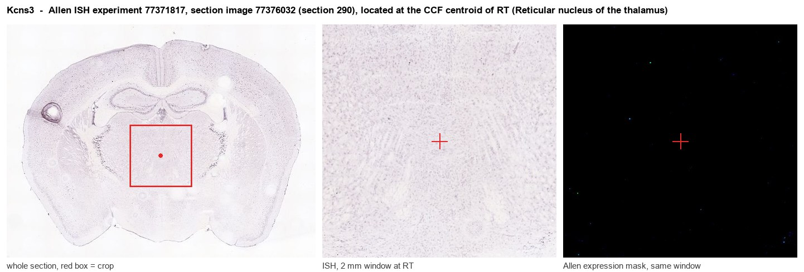
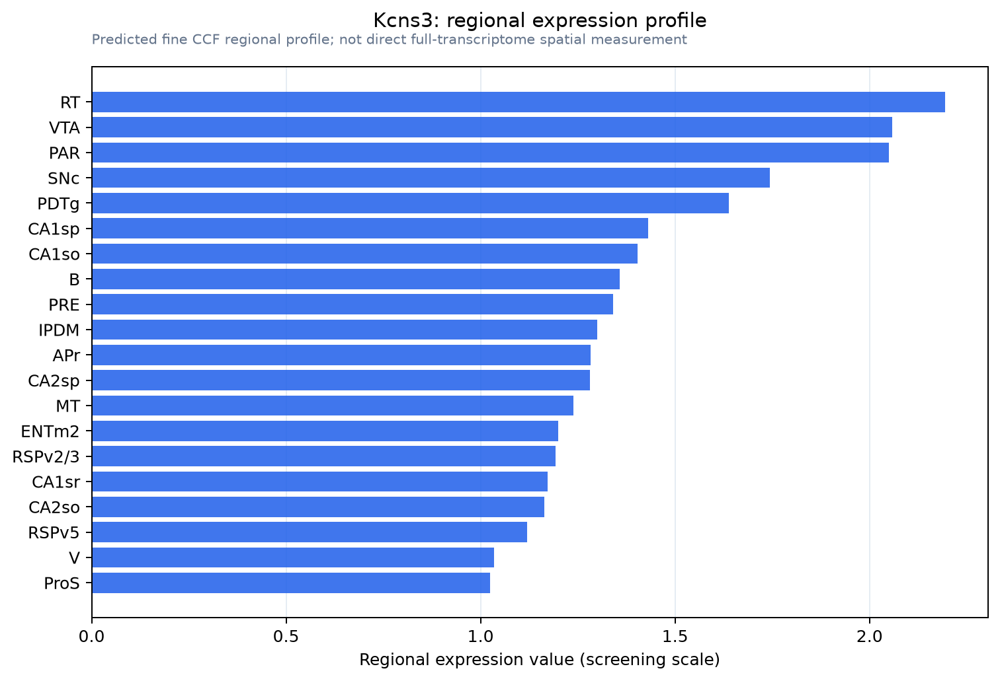

Kcns3
Delayed-rectifier potassium channel regulatory subunit KCNS3 (Delayed-rectifier potassium channel subunit Kv9.3) (Potassium voltage-gated channel subfamily S member 3)
Spatial tier: REGION_BIASED · Class: ION_CHANNEL · Top region: RT (Reticular nucleus of the thalamus) · Positive regions: 37/554
Function in RT: evidence, prediction, innovation
- Gene function
- KCNS3 encodes Kv9.3, an electrically silent KvS potassium channel subunit. It cannot conduct alone but heteromerises with Kv2.1/Kv2.2 delayed rectifiers, shifting their activation to more negative potentials and slowing deactivation, which tunes repetitive high-frequency firing. In cortex it is a selective marker of parvalbumin-expressing fast-spiking GABA neurons.
- Region function
- The thalamic reticular nucleus is a shell of parvalbumin-rich GABAergic neurons that surrounds the thalamus and provides the main inhibitory feedback onto relay nuclei; its burst firing generates sleep spindles and it gates sensory transmission during attention.
- Published in this region
- inferred No region-specific literature found. The closest evidence is strongly cell-type matched: Georgiev 2012 showed KCNS3 is selectively expressed by parvalbumin GABA neurons in primate prefrontal cortex, Georgiev 2014 found this expression reduced in schizophrenia, and Miyamae 2021 showed Kcns3 deficiency disrupts fast-spiking physiology of PV neurons in mouse prefrontal cortex. The TRN is composed almost entirely of PV-positive GABAergic neurons.
- Predicted function
- Prediction: Kcns3 should perform the same job in the reticular nucleus as in cortical PV cells, setting the Kv2-based delayed rectifier so that reticular neurons can fire fast, non-adapting trains and repolarise rapidly between spikes within a burst. Kcns3 knockout or TRN-restricted knockdown is predicted to broaden spikes, lower maximal firing frequency and degrade the intraburst structure of spindles, producing weaker sleep spindles, impaired attentional filtering and a schizophrenia-relevant thalamocortical phenotype.
- Innovation
- ★★★★☆ 4/5 KCNS3 has a strong schizophrenia link through cortical PV neurons, and extending it to the PV-only reticular nucleus is an obvious but untaken step.
- Tools
- Kcns3 knockout mice (Miyamae 2021); Kv2 blockers guangxitoxin-1E and RY785 (no Kv9.3-selective drug); anti-Kv9.3 antibodies; PV-Cre and Gbx2-CreER for TRN-restricted manipulation.
- References
Direct evidence located at the region

Allen ISH experiment 77371817, section image 77376032 (section 290): the section that contains the CCF centroid of Reticular nucleus of the thalamus according to the Allen image-to-atlas alignment (reference_to_image), with a 2 mm window around that point. Left: whole section, red box = window. Middle: ISH signal. Right: Allen's expression-mask view of the same window. open this image in the Allen viewer
Direct spatial evidence

Regional expression figure

Predicted WMB × fine-CCF profile; not direct full-transcriptome spatial measurement.
Spatial profile
Evidence and specificity
- Evidence status
- PREDICTED_FINE
- Direct sources
- None; predicted localization only
- Exclusive threshold
- 12 positive regions out of 554
- Spatial specificity
- 0.282
- Top-region fraction
- 0.041
- Filter status
- PASS
Interpretation limits
- Cell-type-to-region projection is imputed expression, not direct spatial measurement.
- Adult reference atlases do not establish stability across age, sex, strain, state, or disease.
- Transcript abundance does not guarantee protein abundance or genetic-tool performance.